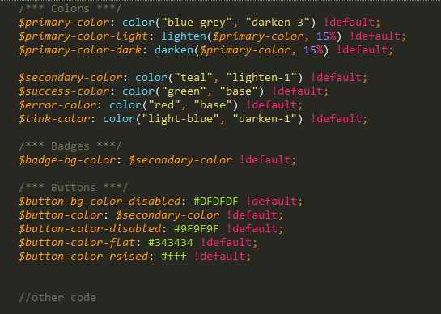

Created: 12/07/2015
By: Alex Budaev
Email: budaev_alex@yahoo.com
Thank you for purchasing my theme. If you have any questions that are beyond the scope of this help file, please feel free to email via my user page contact form here. Thanks so much!
For easy working with the template you want to install
$ npm install npm -g$ npm install -g bowerAt the command prompt, specify the path to the template directory. (for example in Windows)
$ cd path-to-directoryBefore work, run the task “default”
$ gulp$ gulp defaultModify HTML, CSS, JS, IMG files
Build the template.
$ gulp buildThis template is a fluid layout with one columns. Some repetitive code placed in external files (Directory “./app/template”).
This code is connected as follows.
//= path-to-file//= template/_head.htmlThe general template structure is the same throughout the template. Here is the general structure.
If you want to change the color scheme, set the color in the file “./app/sass/components/_variables.scss”
You can also override the color file “./app/sass/main.scss”
nav {
background-color: #someColor
}
If you find that your new style is not overriding, it is most likely because of a specificity problem. Scroll down in your CSS file and make sure that there isn't a similar style that has more weight.
nav li a {
background-color: #someColor
}
So, to ensure that your new styles are applied, make sure that they carry enough "weight" and that there isn't a style lower in the CSS file that is being applied after yours.
I use one SCSS file (main.scss) in this template. This file is compiled into main.css (./app/css/main.css)
Material.css is compiled file Materialize (CSS Framework based on Material Design).
Connect CSS files into _head.html (./app/template/_head.html)
Edit CSS files is not recommended. For more control is recommended only change SCSS files.
Main.scss contains all of the specific stylings for the page. The file is separated into sections using:
/* === Header Section === */
some code
/* === Main Section === */
some code
/* === Footer === */
some code
/* === General === */
some code
etc, etc.
If you would like to edit a specific section of the site, simply find the appropriate label in the CSS file, and then scroll down until you find the appropriate style that needs to be edited.
This template imports three Javascript files.
I've used the following images, icons or other files as listed.
Once again, thank you so much for purchasing this theme. As I said at the beginning, I'd be glad to help you if you have any questions relating to this theme. No guarantees, but I'll do my best to assist. If you have a more general question relating to the themes on ThemeForest, you might consider visiting the forums and asking your question in the "Item Discussion" section.
Alex Budaev